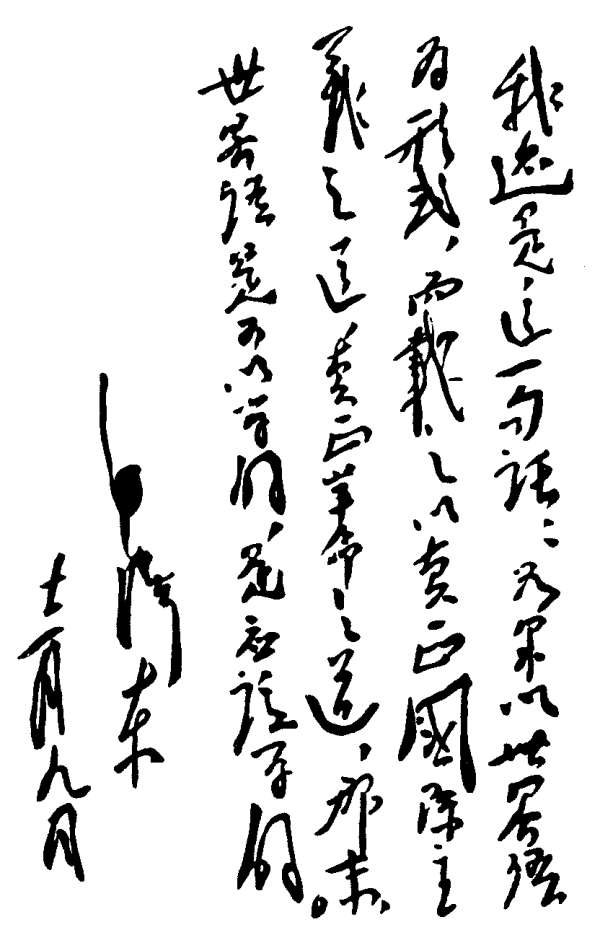

|
你安装了这个世界语学习软件，就意味着你即将跨入世界语的大门，你一定会问：什么是世界语？ 我国有56个民族，960多万平方公里的领土，不同的民族有不同的语言，不同的地区有不同的方言，那么，如何与这些不同民族不同地区的人们进行沟通和交流呢？这就需要我们都来学习汉语普通话。大家都讲普通话，沟通与交流就没有障碍了。所以我们国家在大力推广普通话。 同样的道理，世界上现在有200个国家和地区，约2000个大小不同的民族，使用着5600多种语言。不难想象，世界各地的人们要想沟通与交往是何等的困难！正因如此，国际上也在大力推广一种中立的、简单易学的国际普通话，这就是世界语。 世界语(Esperanto)是波兰医生柴门霍夫博士(Lazaro Ludoviko Zamenhof )于1887年创造的一种国际辅助语言。他希望人类借助这种语言，达到民族间相互了解，消除仇恨和战争，实现平等、博爱的人类大家庭。柴门霍夫在公布这种语言方案时用的笔名是“Doktoro Esperanto”（意为“希望者博士”），后来人们就把这种语言称作Esperanto。20世纪初，当世界语刚传入中国时，有人曾把它音译为“爱斯不难读”语，也有叫“万国新语”的。以后有人借用日本人的意译名称“世界语”，一直沿用至今。 世界语是在印欧语系的基础上创造出来的一种人造语，吸收了这个语系各种语言的共同性的合理因素，更加简化和规范化，具有声音优美、科学性强、富于表现力的特点。 世界语共有二十八个字母，书写形式采用拉丁字母，一个字母只发一个音，每个字母的音值始终不变，也没有不发音的字母，其语音和书写完全一致，每个词的重音固定在倒数第二个音节上，学会了二十八个字母和掌握了拼音规则以后，就可以读出和写出任何一个单词。 世界语的词汇尽量采用自然语言中的国际化部分，其基本词汇的词根大部分来自印欧语系的各自然语言，其中大部分来自拉丁语族，少部分来自日尔曼语族和斯拉夫语族。世界语词汇的粘合性及前缀、后缀的使用，大大丰富了它的构词能力，而且也简单明了。世界语词汇的这些特点减轻了人们记忆单词的负担。 世界语的语法是在印欧语系的基础上加以提炼的，其基本语法规则只有十六条，比较有规则，但又相当灵活，因此比较容易掌握。 世界语的这些优点，使它比任何一种民族语言都易于学习和掌握。 在人类历史上，先后出现过几百种国际共同语方案，但至今生存下来的只有世界语这种方案。这是因为： （1）世界语不是凭空臆造出来的，而是在印欧语系的基础上，按照一定的语言规律，经过研究整理而成，并且在使用中不断发展和完善的，具有严密的科学性和群众基础； （2）由于世界语的语音、词汇和语法的优点，世界语比较容易推广； （3）柴门霍夫在公布世界语方案后多次声明，世界语不是他个人的，而是属于全人类的，易为大家所接受； （4）世界语是“中立性”的语言，它不干涉各国、各民族的内部事务，也不排斥、也不企图取代任何一种民族语，它只是为人类在进行国际交往时提供一种国际辅助语。其目的是使各国人民之间的交往变得更加平等，更加容易，符合各国人民要求发展、要求和平的愿望； （5）在很多国家有许多热心的世界语者在积极宣传、推广并使用世界语，在国际上也建立了各种专业性的组织。 现在世界语已传播到120多个国家。约有一千多万人掌握和使用这种语言，已被应用于政治、经济、文教、科技、出版、交通、邮电、广播、旅游和互联网等各个领域。 随着互联网的发展，国际交往日益频繁，掌握了世界语，你就可以通过网络轻松地在世界各国找到志同道合的朋友，你可以同他们用电子邮件通信，也可以用Skype、MSN、ICQ、雅虎通等同他们交流聊天，甚至你还可以就共同感兴趣的项目与他们进行合作…… 让我们记住冰心老人的话吧：“懂得世界语，就懂得世界。” |

1939年12月9日，毛泽东主席为延安世界语协会展览会题词: “我还是这一句话：如果以世界语为形式，而载之以真正国际主义之道，真正革命之道，那么，世界语是可以学的，是应当学的。” |
相关链接：世界语与国际组织 世界语在中国一百年 中国网世界语版 中国报道 国际在线世界语版
中国世界语网： http://www.esperanto.cn
国际世界语协会：http://www.uea.org
本课程是根据巴西世界语多媒体教学软件Kurso de Esperanto翻译而成，主要供自学使用。程序中包含20多种语言的译本。
中文版本的翻译中，课文解释部分不完全按原文翻译，而是根据国内情况略有增删；语句、课文、练习等的翻译在使其符合汉语表达习惯的同时，尽量顾及时态、复数等语法因素，以便初学者既能准确理解，又能正确的完成作业练习。
原程序翻译于2005年春，并在国内网站发布供大家试用。2007年对内容又作了全面校对，并嵌入李忠民同志制作的《世界语汉语双向词典》， 在国内主流软件网站提供下载。这次官方4.0版正式采纳的中文译文就是2007年的修订版。鉴于译者水平有限，错误和不妥之处在所难免，如果你在使用中发现有何问题，请用以下联系方式同我联系，以便今后进一步修改。
Skype：deodaro QQ: 767595452 电子邮件：deodaro(a)yahoo.com.cn
张雪松 2012年6月15日